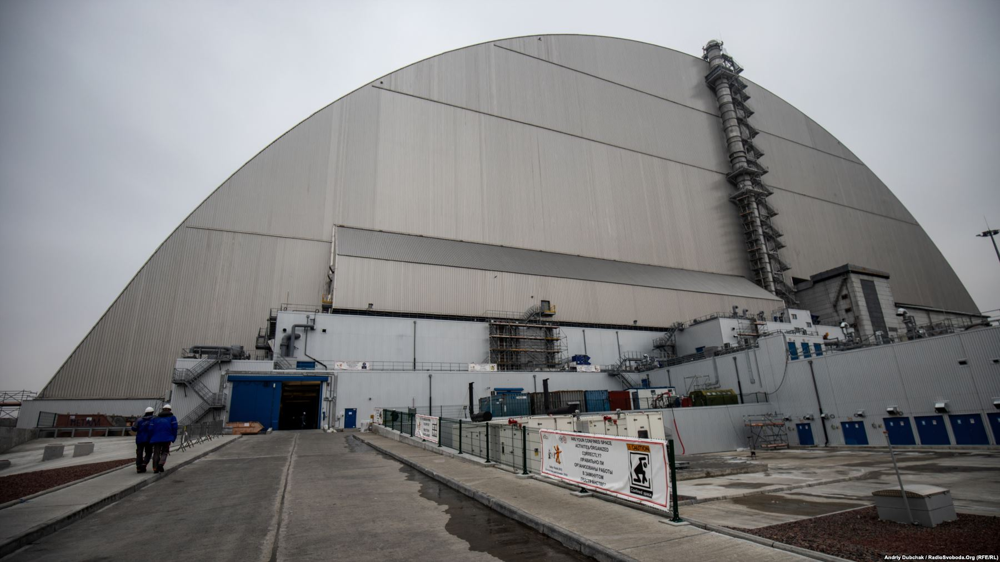
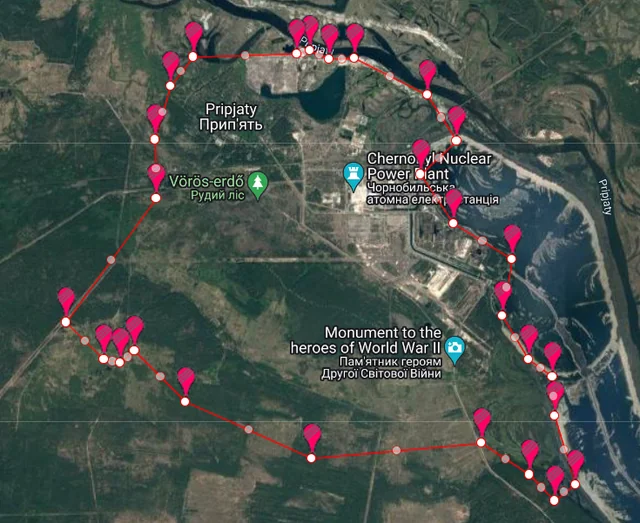
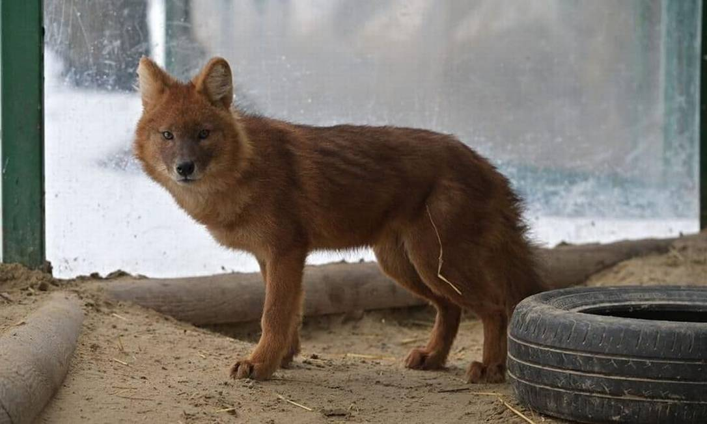

Nenhum evento marcou tanto a imagem da Ucrânia no mundo quanto o acidente na usina nuclear de Chernobyl, em 1986.
O acidente de 1986
Na madrugada de 26 de abril de 1986, o reator 4 da usina nuclear de Chernobyl explodiu durante um teste de segurança, liberando material radioativo que se espalhou por boa parte da Europa. A cidade vizinha de Pripyat, com cerca de 50 mil habitantes, foi evacuada em menos de dois dias e nunca mais foi reocupada.

Novo Confinamento Seguro
Uma estrutura de aço de 36 mil toneladas foi construída para cobrir o antigo sarcófago improvisado, isolando a radiação do reator 4 até o ano 2065, quando será necessário substituí-la.
Engenharia
Zona de exclusão
Uma área de 30 km ao redor da usina segue restrita até hoje, mas parte dela é liberada para turismo guiado desde 2011.
Turismo
A natureza retomou o espaço
Sem presença humana constante, a região virou um refúgio inesperado para lobos, cavalos selvagens e outras espécies que hoje vivem soltas por Pripyat.
Curiosidade